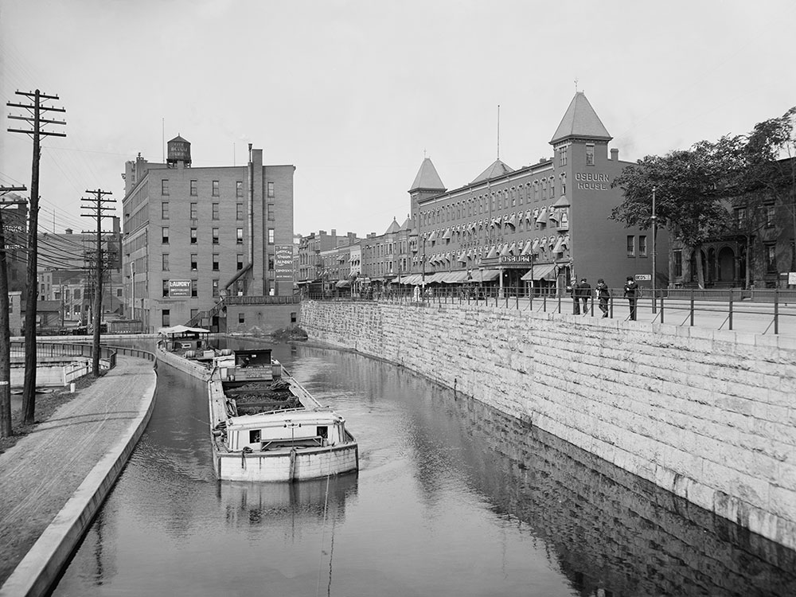

Rochester
About
Intro
Rochester is a city in the U.S. state of New York, the seat of Monroe CountyThe city of Rochester forms the core of a much larger metropolitan area with a population of around 1.1 million people, across six counties. Rochester was one of the United States' first boomtowns, initially due to the fertile Genesee River Valley, which gave rise to numerous flour mills, and then as a manufacturing center, which spurred further rapid population growth. The city rose to prominence as the birthplace and home of some of America's most iconic companies, by which the region became a global center for science, technology, and research and development.

History
Settlement began in the late 18th century, and the city flourished with the opening of the Erie Canal. It became a major manufacturing center, and attracted many Italians, Germans, Irish and other immigrants, as well as a dominant group of Yankees of New England origin. The Yankees made Rochester the center of multiple reform movements, such as abolitionism and women's rights. It was famous as the center of the American photography industry, with headquarters of Eastman Kodak. In the 1970s it became fashionable to call the industrial cities along the Great Lakes 'rustbelt cities' following the move away from steel, chemical and other hard goods manufacturing.
Culture
Cuisines
One food product Rochester calls its own is the "white hot", a variant of the hot dog or smoked bratwurst made by the local Zweigle's company and other companies. Another local specialty is the "Garbage Plate", a trademark of Nick Tahou Hots that traditionally includes macaroni salad, home fries, and two hot dogs or cheeseburgers topped with mustard, onions, and their famous meat hot sauce. Many area restaurants feature copies or variations with the word "plate" commonly used as a general term. Rochester was home to French's Mustard, whose address was 1 Mustard Street.

Music
The Eastman School of Music is the professional school of music of the University of Rochester in Rochester, New York. It was established in 1921 by industrialist and philanthropist George Eastman. It offers Bachelor of Music (B.M.) degrees, Master of Arts (M.A.) degrees, Master of Music (M.M.) degrees, Doctor of Philosophy (Ph.D.) degrees, and Doctor of Musical Arts (D.M.A.) degrees in many musical fields. The school also awards a "Performer's Certificate" or "Artist's Diploma". In 2015, there were more than 900 students enrolled in the collegiate division of the Eastman School (approximately 500 undergraduate and 400 graduate students).